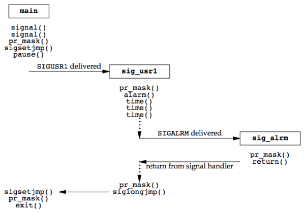
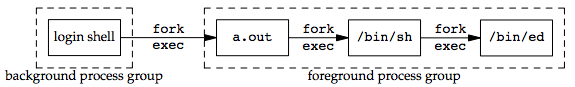

信号
Table of Contents
信号 是 软件中断 ，提供了一种 处理异步事件 的方法：例如终端用户键入中断键，则会通过信号机制停止一个程序
UNIX的早期版本，就已经有信号机制，但是这些系统所提供的信号模型并不可靠 信号可能被丢失，而且在执行临界区代码时，进程很难关闭所选择的信号 4.3BSD和SVR3对信号模型都作了更改，增加了可靠信号机制 但是这两种更改之间并不兼容。幸运的是POSIX.1对可靠信号例程进行了标准化 本章先对信号机制进行综述，并说明每种信号的一般用法 然后分析早期实现的问题，最后说明解决这些问题的方法
基础概念
每个信号都有一个名字，这些名字都以三个字符 SIG 开头。例如：
- SIGABRT是异常终止信号，当进程调用abort函数时产生这种信号
- SIGALRM是闹钟信号，当由alarm函数设置的时间已经超过后产生此信号
SVR4和4.3+BSD均有31种不同的信号
在头文件 <signal.h> 中，这些信号都被定义为 正整数 ( 信号编号 )
没有一个信号其编号为0，因为信号编号0有特殊的应用 POSIX.1将此种信号编号值称为空信号
信号产生条件
很多条件可以产生一个信号：
- 当用户按某些 特殊键 时产生信号：
- 在 终端 上按 DELETE键 通常产生 中断信号 SIGINT ： 停止 一个 已失去控制程序 的方法
- 硬件异常 产生信号：通常由 硬件检测 到，并将其 通知内核 ，然后 内核 为 该条件发生时正在运行的进程 产生适当的信号
- 除数为0
- 无效的存储访问：产生一个 SIGSEGV
- 进程用 kill(2)系统调用 可将 信号 发送给 另一个进程或进程组 。自然有些限制：
- 接收信号进程 和 发送信号进程 的 所有者必须相同
- 或 发送信号进程的所有者 必须是 超级用户
- 用户可用 kill(1)命令 将信号发送给其他进程
- 这是 kill系统调用的命令 ，常用此命令 终止 一个 失控的后台进程
- 当 检测 到 某种软件条件 已经发生，并将其 通知有关进程 时也产生信号，例如：
- SIGURG : 在网络连接上传来非规定波特率的数据
- SIGPIPE : 在管道的读进程已终止后一个进程写此管道
- SIGALRM : 进程所设置的闹钟时间已经超时
这里并不是指硬件产生条件(如被0除)，而是软件条件
信号处理
信号是异步事件的经典实例，产生信号的事件对进程而言是随机出现的 进程不能只是测试一个变量(例如errno)来判别是否发生了一个信号 而是必须告诉内核“在此信号发生时，请执行下列操作”
系统在某个信号出现时按照下列三种方式中的一种进行操作：
- 忽略 此信号：大多数信号都可使用这种方式进行处理
- 但有两种信号却决不能被忽略，它们是 SIGKILL 和 SIGSTOP
- 原因：为了 向 超级用户 提供一种使进程 终止 或 停止 的可靠方法
- 如果忽略某些由 硬件异常 产生的信号(例如非法存储访问或除以0)，则 进程的行为是未定义的
- 但有两种信号却决不能被忽略，它们是 SIGKILL 和 SIGSTOP
- 捕捉 信号：为了做到这一点要通知内核在某种信号发生时， 调用一个用户函数
- 在用户函数中，可 执行用户希望对这种事件进行的处理 。例如：
- 若编写一个命令解释器，当用户用键盘产生 中断信号 时，很可能希望 返回到程序的主循环 ，终止系统正在为该用户执行的命令
- 如果捕捉到 SIGCHLD 信号，则表示子进程已经终止，所以此信号的捕捉函数可以 调用waitpid 以取得该子进程的进程ID以及它的终止状态
- 如果进程创建了临时文件，那么可能要为 SIGTERM 信号编写一个信号捕捉函数以 清除临时文件 (kill命令传送的系统默认信号是终止信号)
- 在用户函数中，可 执行用户希望对这种事件进行的处理 。例如：
- 执行 系统默认 动作：表10-1给出了对每一种信号的系统默认动作
- 注意：对大多数信号的系统默认动作是 终止该进程
常见信号
表10-1列出所有信号的 名字 ， 说明 ，以及对于信号的 系统默认动作
| 名字 | 说明 | 默认 | 支持系统 |
| SIGABRT | 异常终止(abort) | 终止+core | ANSIC + POSIX |
| SIGALRM | 超时(alarm) | 终止 | POSIX |
| SIGBUS | 硬件故障 | 终止+core | |
| SIGCHLD | 子进程状态改变 | 忽略 | 作业 |
| SIGCONT | 使得暂停进程继续 | 继续/忽略 | 作业 |
| SIGEMT | 硬件故障 | 终止+core | |
| SIGFPE | 算术异常 | 终止+core | ANSIC + POSIX |
| SIGHUP | 链接断开 | 终止 | POSIX |
| SIGILL | 非法硬件指令 | 终止+core | ANSIC + POSIX |
| SIGINT | 终端中断符 | 终止 | ANSIC + POSIX |
| SIGIO | 异步IO | 忽略/终止 | |
| SIGIOT | 硬件故障 | 终止+core | |
| SIGKILL | 终止 | 终止 | POSIX |
| SIGPIPE | 写入无读进程管道 | 终止 | POSIX |
| SIGPOLL | 可轮询事件 | 终止 | SVR4 |
| SIGPROF | profile时间超时 | 终止 | |
| SIGPWR | 电源失效/重启 | 忽略 | SVR4 |
| SIGQUIT | 终端退出符 | 终止+core | POSIX |
| SIGSEGV | 无效内存引用 | 终止+core | ANSIC + POSIX |
| SIGSTOP | 停止 | 暂停 | 作业 |
| SIGSYS | 无效系统调用 | 终止+core | |
| SIGTERM | 终止 | 终止 | ANSIC + POSIX |
| SIGTRAP | 硬件故障 | 终止+core | |
| SIGTSTP | 终端停止符 | 暂停 | 作业 |
| SIGTTIN | 后端读取tty | 暂停 | 作业 |
| SIGTTOUT | 后端写tty | 暂停 | 作业 |
| SIGURG | 紧急数据 | 忽略 | |
| SIGUSR1 | 用户自定义1 | 终止 | POSIX |
| SIGUSR2 | 用户自定义2 | 终止 | POSIX |
| SIGVTALRM | 虚拟时间闹钟 | 终止 | |
| SIGWINCH | 终端窗口大小变化 | 忽略 | |
| SIGXCPU | 超过CPU限制 | 终止+core/忽略 | |
| SIGXFSZ | 超过文件长度限制 | 终止+core/忽略 |
作业表示这是作业控制信号(仅当支持作业控制时，才要求此种信号)
core文件
在系统默认动作列， 终止+core 表示在 进程当前工作目录 的 core文件 中 复制 了 该进程的存储图像
大多数UNIX调试程序都使用core文件以检查进程在终止时的状态
在下列条件下不产生core文件:
- 进程是 设置-用户-ID ，而且 当前用户 并非 程序文件的所有者
- 进程是 设置-组-ID ，而且 当前用户 并非 该程序文件的组所有者
- 用户 没有写 当前工作目录 的许可权
- 文件太大 RLIMIT_CORE
core文件的许可权通常是 用户读/写 ， 组读 和 其他读 (rw-r–r–)
常用信号说明
- SIGABRT ：调用 abort函数 时产生此信号，进程 异常终止
- SIGALRM ：超过用 alarm函数设置的时间 时产生此信号
- 若由 setitimer(2) 函数设置的 间隔时间 已经过时，那么也产生此信号
- SIGBUS：一个实现定义的硬件故障
- SIGCHLD ：在一个 进程终止或停止 时，SIGCHLD信号被 送给其父进程
- 按系统 默认 ，将 忽略此信号
- 如果父进程希望了解其子进程的这种状态改变，则应 捕捉 此信号
- 信号捕捉函数中通常要 调用wait函数 以取得子进程ID和其终止状态
- SIGCONT ： 作业控制 信号，送给 需要继续运行的处于停止状态的进程
- 如果接收到此信号的进程处于 停止状态 ，则系统 默认 动作是使 该进程继续运行
- 否则默认动作是 忽略 此信号
- 例如vi编辑程序在捕捉到此信号后，重新绘制终端屏幕
- SIGEMT：一个实现定义的 硬件故障
- SIGFPE：一个 算术运算异常 ，例如
- 除以0
- 浮点溢出等
- SIGHUP：如果 终端 界面检测到一个 连接断开 ，则将此信号送给与 该终端相关的控制进程
- 被送给 session 结构中 s_leader 字段所指向的 进程
- 仅当终端的 CLOCAL 标志 没有设置 时，在上述条件下才产生此信号
注意：接到此信号的对话期首进程可能在后台，这区别于通常由终端产生的信号(中断、退出和挂起)，这些信号总是传递给前台进程组 如果对话期前台进程终止，则也产生此信号。在这种情况，此信号送给前台进程组中的每一个进程 通常用此信号“通知守护进程”以 “再读它们的配置文件”。选用SIGHUP的理由是： 因为一个守护进程不会有一个控制终端，而且通常决不会接收到这种信号
- SIGILL：进程已执行一条 非法硬件指令
- SIGINFO：一种4.3+BSD信号，当用户按 状态键 (一般采用 Ctrl-T )时， 终端驱动程序 产生此信号并送至 前台进程组中的每一个进程 (见图9-8)。+ 通常造成在 终端上显示 前台进程组中各进程 的状态信息
- SIGINT ：当用户按 中断键 (一般采用 DELETE 或 Ctrl-C )时， 终端驱动程序 产生此信号并送至 前台进程组中的每一个进程
- 当一个 进程在运行时失控 ，特别是它正在屏幕上产生大量不需要的输出时，常用此信号 终止 它
- SIGIO：一个 异步I/O事件 发生
- SIGIOT：一个实现定义的 硬件故障
- SIGKILL ：两个不能被捕捉或忽略信号中的一个
- 它向系统管理员提供了一种可以 杀死任一进程 的可靠方法
- SIGPIPE ：
- 如果在 读进程 已终止 时 写管道 ，则产生此信号
- 当 socket 的一端已经 终止 时，若进程写该套接口也产生此信号
- SIGPOLL：SVR4信号，当在一个 可轮询设备 上发生一 特定事件 时产生此信号
- 它与4.3+BSD的SIGIO和SIGURG信号类似
- SIGPROF：当 setitimer(2) 函数设置的 统计间隔时间 已经超过时产生
- SIGPWR：SVR4信号，它依赖于系统。它主要用于具有 不间断电源(UPS) 的系统上
如果电源失效，则UPS起作用，而且通常软件会接到通知 在这种情况下，系统依靠蓄电池电源继续运行，所以无须作任何处理 但是如果蓄电池也将不能支持工作，则软件通常会再次接到通知， 它在15~30秒内使系统各部分都停止运行，此时应当传递SIGPWR信号 在大多数系统中使接到蓄电池电压过低的进程将信号SIGPWR发送给init进程，然后由init处理停机操作 很多系统init实现在inittab文件中提供了两个记录项用于此种目的：powerfail以及powerwait 目前已能获得低价格的UPS系统，它用RS-232串行连接能够很容易地将蓄电池电压过低的条件通知系统，于是这种信号也就更加重要了
- SIGQUIT ：当用户在 终端 上按 退出键 (一般采用 Ctrl-\ )时，产生此信号，并送至 前台进程组中的所有进程
- 不仅 终止前台进程组 (如 SIGINT 所做的那样)，同时 产生一个core文件
- SIGSEGV：进程进行了一次 无效的内存访问
- SIGSTOP ： 作业控制 信号，它 停止一个进程 。它类似于交互停止信号( SIGTSTP )，两个不能被捕捉或忽略信号中的一个
- SIGSYS：一个 无效的系统调用
- 由于某种未知原因，进程执行了一条系统调用指令，但其指示 系统调用类型的参数却是无效的
- SIGTERM ：由 kill(1)命令 发送的系统 默认终止信号
- SIGTRAP：一个实现定义的 硬件故障
- SIGTSTP ： 交互停止 信号，当用户在终端上按 挂起键 (一般采用 Ctrl-Z )时，终端驱动程序产生此信号
- SIGTTIN ：当一个 后台进程组进程 试图 读 其 控制终端 时，终端驱动程序产生此信号。在下列例外情形下 不产生此信号 ，此时 读操作 返回出错 ，errno设置为 EIO ：
- 读进程 忽略 或 阻塞 此信号
- 读进程所属的进程组 是 孤儿进程组
- SIGTTOU ：当一个 后台进程组进程 试图 写 其 控制终端 时产生此信号。与上面所述的SIGTTIN信号不同，一个进程可以选择为允许后台进程写控制终端。如果 不允许后台进程写 ，在这两种情况下 不产生此信号 ，写操作 返回出错 ，errno设置为 EIO ：
- 写进程 忽略 或 阻塞 此信号
- 写进程所属进程组 是 孤儿进程组
不论是否允许后台进程写，某些除写以外的下列终端操作也能产生此信号：tcsetattr，tcsendbreak，tcdrain，tcflush，tcflow以及tcsetpgrp
- SIGURG：通知进程已经发生一个紧急情况
- 在网络连接上，接到 非规定波特率 的数据时，此信号可选择地产生
- SIGUSR1 ：一个 用户定义 的信号，可用于应用程序
- SIGUSR2 ：这是一个 用户定义 的信号，可用于应用程序
- SIGVTALRM：当一个由 setitimer(2) 函数设置的 虚拟间隔时间已经超过 时产生此信号
- SIGWINCH：SVR4和4.3+BSD内核保持与每个 终端或伪终端 相关联的 窗口的大小
- 一个进程可以用 ioctl 函数 得到或设置 窗口的大小
- 如果一个进程用ioctl的设置-窗口-大小命令 更改了窗口大小 ，则内核将 SIGWINCH 信号送至 前台进程组
- 一个进程可以用 ioctl 函数 得到或设置 窗口的大小
- SIGXCPUS：如果 进程 超过 了其 软CPU时间限制 ，则产生此信号
- SIGXFSZ：如果 进程 超过 了其 软文件长度限制 ，则产生此信号
signal函数
signal 函数：为某个 特定信号 设置处理函数
#include <signal.h> /** * 声明sighandler_t是一个函数指针类型，其参数是一个int，没有返回值的函数指针 * */ typedef void (*sighandler_t)(int); /** * 为信号 signo 注册一个特定的处理函数handler * * signo: 信号编号 * handler: 函数指针，参数是一个int类型，无返回值 * SIG_IGN：忽略指定信号 * SIG_DFL：系统默认处理信号 * 或者是自定义信号处理函数的地址 * * return：成功则为 之前的信号处理函数，若出错则为 SIG_ERR * */ sighandler_t signal(int signo, sighandler_t handler); void (*signal(int signo, void (*handler)(int))(int);
signal函数要求两个 参数 ：
- 第一个参数 signo ：一个 整型数 ，表10-1中的 信号名
- 第二个参数 handler ：一个 函数指针 ，它指向的函数需要一个 整型参数 ， 无返回值 ，其含义是指向要设置的 信号处理函数的指针
- 常数 SIG_IGN ：内核表示 忽略 此信号
- SIGKILL 和 SIGSTOP 不能忽略
- 常数 SIG_DFL ：系统 默认 动作
- 接到信号后要调用的函数的地址：此函数为信号处理程序或信号 捕捉函数 ，调用此函数为捕捉信号
- 常数 SIG_IGN ：内核表示 忽略 此信号
signal的 返回值 也是一个 函数指针 ，指向的函数需要一个 整形参数 ， 无返回值 ，其含义是指向 以前的信号处理函数的指针
/* Fake signal functions. */ #define SIG_ERR ((__sighandler_t) -1) /* Error return. */ #define SIG_DFL ((__sighandler_t) 0) /* Default action. */ #define SIG_IGN ((__sighandler_t) 1) /* Ignore signal. */ #define SIG_ERR (void (*)()) -1 #define SIG_DFL (void (*)()) 0 #define SIG_IGN (void (*)()) 1
这些常数可用于表示"指向函数的指针，该函数要一个整型参数，而且无返回值" signal的第二个参数及其返回值就可用它们表示 这些常数所使用的三个值不一定要是-1，0和1 但必须是三个决不能是任一可说明函数的地址值，大多数UNIX系统使用上面所示的值
signal实例
捕捉 两个用户定义的信号 并 打印信号编号 ：
#include <signal.h> #include "apue.h" //信号处理函数，一个函数对应两个信号SIGUSR1和SIGUSR2 static void sig_usr(int); int main(void) { //注册信号处理函数 if ( SIG_ERR == signal(SIGUSR1, sig_usr)) err_sys("can't catch signal SIG_USR1"); if( SIG_ERR == signal(SIGUSR2, sig_usr)) err_sys("can't catch signal SIG_USR2"); for (; ; ) pause(); } static void sig_usr(int signo) { if (SIGUSR1 == signo) printf("received SIGUSR1\n"); else if (SIGUSR2 == signo) printf("received SIGUSR2\n"); else err_dump("received signal %d \n", signo); return ; }
测试结果：
$ ./src/signal/sigusr1 & #后台启动进程 [1] 10225 # 支持作业控制shell打印作业号和进程号 $ kill -USR1 10225 # 向进程发送信号SIGUSR1 received SIGUSR1 $ kill -USR2 10225 # 向进程发送信号SIGUSR2 received SIGUSR2 $ kill 10225 # 向进程发送信号SIGTERM [1]+ Terminated ./src/signal/sigusr1
当向该进程发送SIGTERM信号后，该进程就终止 因为它不捕捉此信号，而对此信号的系统默认动作是终止
exec启动程序
当 执行 一个程序时， 所有信号的状态 都是系统 默认 或 忽略 ：
- 通常 所有信号 都被设置为 系统默认 动作
- 除非 调用exec的进程 忽略 该信号
exec函数将原先设置为“要捕捉”的信号都更改为“默认动作”，其他信号的状态则不变 一个进程原先要捕捉的信号，当其执行一个新程序后，就自然地不能再捕捉了 因为“信号捕捉函数的地址”很可能在所执行的新程序文件中已无意义！！！
对于一个非作业控制shell，当在后台执行一个进程时，例如：
$ cc main.c &
shell自动将”后台进程“中对中断和退出信号的处理方式设置为”忽略“，于是当按中断键时就不会影响到后台进程 如果没有这样的处理，那么当按中断键时，它不但终止前台进程，也终止所有后台进程
很多捕捉这两个信号的交互程序具有下列形式的代码:
void sig_int(int); void sig_quit(int); if (signal(SIGINT, SIG_IGN) != SIG_IGN) signal(SIGINT, sig_int); if (signal(SIGQUIT, SIG_IGN) != SIG_IGN) signal(SIGQUIT, sig_quit);
这样处理后，仅当 SIGINT 和 SIGQUIT 当前并不忽略，进程才捕捉它们
从signal的这两个调用中也可以看到这种函数的限制： 只有通过“改变信号的处理方式”才能“获得信号的当前处理方式”！！！
fork创建进程
当一个进程调用fork时，其 子进程 继承 父进程 的 信号处理方式
因为子进程在开始时复制了父进程存储图像，所以信号捕捉函数的地址在子进程中是有意义的
不可靠性
在早期的UNIX版本中(例如V7)，信号是不可靠的
不可靠：一个 信号发生 了，但 进程却可能不知道这个信号
丢失信号
早期版本中的一个问题是在进程 每次处理信号 时，随即将 信号动作复置为默认值 ，因此早期的信号处理如下：
static int sig_int(); //... signal(SIGINT, sig_int); //... int sig_int(int signo) { //此时SIGINT信号处理动作已经恢复成默认，必须再次注册sig_int函数 signal(SIGINT, sig_int); //处理SIGINT信号 }
问题在于：在“信号发生”之后到“信号处理程序中调用signal函数”之间有一个时间窗口 在此段时间中可能发生另一次同样中断信号，第二个信号会造成执行默认动作，而对中断信号则是终止该进程！
无法阻塞信号
有时用户希望通知内核 阻塞 一种信号： 不要忽略 该信号，在其发生时 记住 它，然后在 进程作好了准备 时再 通知 它
那时进程对信号的控制能力也很低，它能“捕捉”信号或“忽略”它 但有些很需要的功能它却并不具备： 1. “阻塞信号”的能力当时并不具备 2. 内核也无法“关闭”某种信号，只能忽略它
- 主函数调用 pause 函数使自己 睡眠 ，直到 捕捉 到一个信号
- 当 信号被捕捉 到后，信号处理程序将标志 sig_int_flag 设置为 非0
在 信号处理程序返回 之后， 内核 将该 进程唤醒 ，它 检测 到 该标志为非0 ，然后执行它所需做的
int sig_int_flag = 0; //如果捕捉到SIGINT信号，则非0 int sig_int(int); //SIGINT信号处理函数 int main() { //注册SIGINT信号处理函数 signal(SIGINT, sig_int); //... while(sig_int_flag == 0) // 如果此时信号发生，pause可能一直休眠下去！！！ pause();//一直睡眠直到某个信号发生 //... } int sig_int(int signo) { //再次注册信号处理函数 signal(SIGINT, sig_int); //设置标志变量，使得main函数离开while循环 sig_int_flag = 1; }
问题在于：如果在测试sig_int_flag之后，调用pause之前发生信号，此时sig_int_flag已经变为1，但是程序还是会调用pause 如果以后再无此信号发生，则此进程可能会一直睡眠，因此这次发生的信号也就丢失了！
这种类型的程序在大多数情况下会正常工作，使得我们认为它们正确，而实际上却并不是如此
可中断的系统调用
早期UNIX系统的一个特性是： 如果在进程执行一个低速系统调用而阻塞期间捕捉到一个信号 则该系统调用就被中断不再继续执行，该系统调用返回出错，其errno设置为EINTR 这样处理的理由是因为一个信号发生了，进程捕捉到了它 这意味着已经发生了某种事情，所以是个好机会应当唤醒阻塞的系统调用
系统调用分成两类：
- 低速系统 调用：可能会使 进程永远阻塞 的一类系统调用，它们包括：
- 在 读某些类型的文件 时，如果 数据并不存在 则可能会使调用者永远阻塞，例如：
- 管道
- 终端设备
- 网络设备
- 在 写这些类型的文件 时，如果 不能立即接受这些数据 ，则也可能会使调用者永远阻塞
- 打开文件 ，在某种条件发生之前也可能会使调用者阻塞。例如：
- 打开终端设备，它要等待直到所连接的调制解调器回答了电话
- pause (调用 进程睡眠 直至 捕捉 到一个信号)和 wait
- 某些 ioctl 操作
- 某些 进程间通信 函数
- 在 读某些类型的文件 时，如果 数据并不存在 则可能会使调用者永远阻塞，例如：
使用 中断系统 调用这种方法来处理的一种情况是： 一个进程起动了读终端操作，而使用该终端设备的用户却离开该终端很长时间 在这种情况下进程可能处于阻塞状态几个小时甚至数天，除非系统停机，否则一直如此
- 其他系统 调用
在这些低速系统调用中一个例外是与“磁盘I/O”有关的系统调用 虽然读、写一个磁盘文件可能暂时阻塞调用者：在磁盘驱动程序将请求排入队列，然后在适当时间执行请求期间 但是除非发生硬件错误，I/O操作总会很快返回，并使调用者不再处于阻塞状态
必须用 显式 方法 处理 可中断的系统调用 带来的 出错返回 。假定进行一个读操作，它被中断，希望重新起动它如下列样式：
again: if ((n = read(fd, buff, BUFFSIZE)) < 0) { if (errno == EINTR) goto again; /* just an interrupted system call */ /* handle other errors */ }
为了帮助应用程序使其不必处理被中断的系统调用，4.2BSD引进了某些被中断的系统调用的自动再起动 自动再起动的系统调用包括: ioctl、read、readv、write、writev、wait和waitpid 正如前述，其中前五个函数只有对低速设备进行操作时才会被信号中断，而wait和waitpid在捕捉到信号时总是被中断 某些应用程序并不希望这些函数被中断后再起动，因为这种自动再起动的处理方式也会带来问题 为此4.3BSD允许进程在每个信号各别处理的基础上不使用此功能 4.2BSD引进自动再起动功能的一个理由是： 有时用户并不知道所使用的输入、输出设备是否是低速设备 如果编写的程序可以用交互方式运行，则它可能读、写终端低速设备 如果在程序中捕捉信号，而系统却不提供再起动功能，则对每次读、写系统调用就要进行是否出错返回的测试 如果是被中断的，则再进行读、写
表10-2列出了几种实现所提供的信号功能及它们的语义
|
函数 |
系统 |
信号处理 函数是否 再包装 |
阻塞信号 的能力 |
被中断系统 调用的再 启动 |
|
signal |
V7, SVR2 SVR3, SVR4 |
|
|
决不 |
|
sigset, sighold, sigrelse, sigignore, sigpause |
SVR3, SVR4 |
• |
• |
决不 |
|
signal, sigvec, sigblock, sigsetmask, sigpause |
4.2BSD | • | • | 总是 |
| 4.3BSD | • | • | 默认 | |
|
sigaction, sigprocmask, sigpending, sigsuspend |
POSIX.1 | • | • | 未说明 |
| SVR4 | • | • | 可选 | |
| 4.3BSD | • | • | 可选 |
可再入函数
进程 捕捉到信号 并 继续执行 时：
- 首先 执行 该 信号处理程序中的指令
- 如果从信号处理程序 正常返回 (例如没有调用 exit 或 longjmp )
- 继续执行 在 捕捉到信号 时 进程正在执行 的 正常指令序列
但在信号处理程序中，不能判断捕捉到信号时进程执行到何处 如果进程正在执行malloc，在其堆中分配另外的存储空间 而此时由于捕捉到信号插入”执行该信号处理程序，其中又调用malloc“，这时会发生什么？ 又比如进程正在执行getpwnam这种将其结果存放在”静态存储单元“中的函数 而插入执行的”信号处理程序中又调用这样的函数“，这时又会发生什么呢？ 在malloc例子中，可能会对”进程造成破坏“，因为malloc通常为它所分配的存储区保持一个链接表 而插入执行信号处理程序时，”进程可能正在更改此链接表“ 而在getpwnam的例子中，正常返回给调用者的信息可能由返回至信号处理程序的”信息覆盖“
函数是不可再入的原因为：
- 使用 静态数据结构
- 调用 malloc 或 free 函数
- 标准I/O 函数，标准I/O库的很多实现都以不可再入方式使用全局数据结构
信号处理程序中即使调用了POSIX定义的可再入的函数，但因为每个进程只有一个errno变量，所以仍可能修改了其原先的值 一个信号处理程序，它恰好在main刚设置errno之后被调用 如果该信号处理程序调用read，则它可能更改errno的值，从而取代了刚由main设置的值
因此，作为一个通用的规则，应当在 信号处理程序前保存，而在其后恢复errno
信号处理函数中调用不可再入函数
信号处理程序my_alarm调用不可再入函数getpwnam，而my_alarm每秒钟被调用一次：
#include "apue.h" #include <pwd.h> static void my_alarm(int signo) { struct passwd *rootptr; printf("in signal handler\n"); if ((rootptr = getpwnam("root")) == NULL) err_sys("getpwnam(root) error"); alarm(1); } int main(void) { struct passwd *ptr; signal(SIGALRM, my_alarm); alarm(1); for ( ; ; ) { if ((ptr = getpwnam("sar")) == NULL) err_sys("getpwnam error"); if (strcmp(ptr->pw_name, "sar") != 0) printf("return value corrupted!, pw_name = %s\n", ptr->pw_name); } }
运行此程序时，其结果具有随意性： 通常在信号处理程序第一次返回时，该程序将由SIGSEGV信号终止 检查core文件，从中可以看到main函数已调用getpwnam，而且当信号处理程序调用此同一函数时，某些内部指针出了问题 偶然，此程序会运行若干秒，然后因产生SIGSEGV信号而终止 在捕捉到信号后，若main函数仍正确运行，其返回值却有时错误，有时正确 有时在信号处理程序中调用 getpwnam 会出错返回，其出错值为EBADF(无效文件描述符)
从此实例中可以看出：若在 信号处理程序 中 调用 一个 不可再入函数 ，则其 结果是不可预见的
可靠信号机制
术语
产生(generation)
造成信号的 某个事件发生 ，向 某个进程 发送 一个信号
- 硬件 异常：例如除以0
- 软件 条件：例如闹钟时间超过
- 终端特殊键
- 调用 kill 函数
递送(delivery)
内核 在 进程表 中 设置 某种形式的一个 标志 ，这被称为向一个进程 递送 信号
递送顺序(delivery order)
如果有多个信号要递送给一个进程，POSIX.1并没有规定这些信号的递送顺序 但是与进程当前状态有关的信号一般会被优先递送，例如SIGSEGV
未决(pending)
信号 产生 和 递送 之间的 时间间隔
阻塞(blocking)
进程可以为 某个信号 设置为 阻塞 ：如果对该信号的动作是 系统默认 或 捕捉 该信号，则该进程将对此信号 一直保持 为 未决 状态，直到该进程
- 对此信号 解除了阻塞
- 对此信号的动作 更改为忽略
内核是在“递送信号”给进程的时候“决定”它的“处理动作” 而不是在“信号发生”时候，因此进程在信号递送前仍然可以改变对它的处理动作
进程调用 sigpending 函数将指定的信号设置为 阻塞 和 未决
排队(queue)
如果在进程解除对某个信号的阻塞之前，这种信号发生了多次 POSIX.1允许系统递送该信号一次或多次。如果递送该信号多次，则称这些信号排了队 大多数UNIX并不对信号排队，虽然发生多次，但内核最终只递送这种信号一次
信号屏蔽字(signal mask)
信号屏蔽字 规定了 当前要阻塞递送 到该进程的 信号集
对于每种可能的信号，该“屏蔽字中都有一位”与之对应 对于某种信号，若其对应位已设置，则它当前是被阻塞的
进程可以调用 sigprocmask 来 检测 和 更改 其当前 信号屏蔽字
信号集(sigset)
信号数可能会超过一个 ”整型数” 所包含的“二进制位数”
POSIX.1定义了一个新数据类型 sigset_t ，它保持一个 信号集
例如，信号屏蔽字就保存在这些信号集的一个中
发送信号
kill函数
kill：将 信号 发送 给 进程或进程组
#include <sys/types.h> #include <stdio.h> /** * 将信号发送给进程或进程组 * * pid: 进程ID或进程组ID * signo: 信号编号 * * return: 若成功则为 0，若出错则为 -1 * */ int kill(pid_t pid, int signo);
pid参数有四种不同的情况:
- pid>0 ：将信号发送给 进程ID为pid 的进程
- pid==0 ：将信号发送给其 进程组ID等于发送进程的进程组ID
- 发送进程有 许可权 向其 发送信号的所有进程 ，所有进程并不包括 系统进程集 中的进程
- pid<0 ：将信号发送给其 进程组ID等于pid绝对值
- 发送进程有 许可权 向其 发送信号的所有进程 ，所有进程并不包括 系统进程集 中的进程
- pid==-1 ：将信号发送给 所有进程
如果调用kill为调用进程产生信号，而且此信号是 不被阻塞 的，那么在 kill返回之前 ， signo或者某个其他未决的、非阻塞信号 被 递送 至 该进程
发送权限
进程将信号发送给其他进程需要权限：
- 超级用户 可将信号发送给另一个进程
- 对于非超级用户，其基本规则是 发送者的实际或有效用户ID 必须 等于 接收者的实际或有效用户ID
如果实现支持_POSIX_SAVED_IDS，则用保存的设置-用户-ID代替有效用户ID 特例：如果被发送的信号是SIGCONT，则进程可将它发送给属于同一对话期的任一其他进程
空信号
POSIX.1将 信号编号0 定义为 空信号 。如果signo参数是0，则kill仍 执行 正常的错误检查 ，但 不发送信号
这常被用来确定一个“特定进程”是否仍旧“存在” 如果向一个并不存在的进程发送空信号，则kill返回 -1，errno则被设置为ESRCH
raise函数
raise：向当前进程发送信号
#include <sys/types.h> #include <signal.h> /** * 向当前进程发送信号 * * singo: 信号编号 * * return: 若成功返回 0，若失败返回 -1 * */ int raise(int signo)
等价于：
kill(getpid(), signo);
raise的用法类似于面向对象中的"throw Exception"
alarm和pause函数
alarm
alarm ：设置一个时间值，在将来的某个时刻该时间值会被超过，产生 SIGALRM 信号，默认动作是 终止该进程
#include <unistd.h> /** * 以秒为单位设置进程的闹钟定时器，超过时内核将产生SIGALARM信号并发送到调用进程 * 该信号的默认动作是终止进程 * * seconds: 秒数 * * return：0 或 以前设置的闹钟时间的余留秒数 * */ unsigned int alarm(unsigned int seconds);
参数 seconds 的值是 秒数 ，经过了指定的seconds秒后会 产生信号 SIGALRM
- 信号由内核产生，由于 进程调度的延迟 ，进程得到控制能够处理该信号还需一段时间
- 每个进程 只能有一个 闹钟时间
- 如果在 调用alarm前 已为该进程 设置过闹钟时间 ，而且它还 没有超时
- 以前闹钟时间的余留值 作为本次alarm函数 调用的值 返回
- 以前登记的 闹钟时间则被新值 代换
- 如果在 调用alarm前 已为该进程 设置过闹钟时间 ，而且它还 没有超时
- 如果有 以前登记 的 尚未超过 的闹钟时间，而且 seconds值是0
- 取消 以前的闹钟时间
- 余留值 仍作为函数的返回值
虽然SIGALRM的默认动作是终止进程 但是大多数使用闹钟的进程捕捉此信号，例如执行定时的清除操作等
pause
pause ：使 调用进程 挂起 直至 捕捉到一个信号
#include <unistd.h> /** * 使进程在调用处进入挂起状态等待该进程处理一个信号 * * return: -1，并且 errno 设置为 EINTR * */ int pause(void);
只有 执行了一个信号处理程序 并 从其返回 后， pause才返回
- 在这种情况下，pause返回 -1 ，而且 errno 被设置为 EINTR
sleep实现
sleep1
使用alarm和pause实现sleep1，进程可使自己睡眠一段指定的时间：
#include <signal.h> #include <unistd.h> static void sig_alrm(int signo) { /* nothing to do, just return to wake up the pause */ } unsigned int sleep1(unsigned int nsecs) { if (signal(SIGALRM, sig_alrm) == SIG_ERR) return(nsecs); alarm(nsecs); /* start the timer */ pause(); /* next caught signal wakes us up */ return(alarm(0)); /* turn off timer, return unslept time */ }
sleep1实现有下列问题：
如果调用者已设置了闹钟，则它被sleep1函数中的第一次alarm调用擦去
修正方法： 检查 第一次 调用 alarm的返回值 ：
- 如其 小于 本次调用alarm的参数值，只应等到 前次设置的闹钟时间 超时
- 如果 大于 本次设置值，则在 sleep1函数返回之前 ， 再次设置 闹钟时间，使其在预定时间再发生超时
该程序中修改了对SIGALRM的配置 如果编写了一个函数供其他函数调用，则在该函数被调用时先要保存原配置，在该函数返回前再恢复原配置
修正方法： 保存 signal 函数的 返回值 ，在 返回前 恢复 设置 原配置
在调用alarm和pause之间有一个竞态条件： 在一个繁忙的系统中，可能“alarm”在 “调用pause之前”超时，并 “调用了信号处理程序” 如果发生了这种情况，则在调用pause后，如果没有捕捉到其他信号，则调用者将永远被挂起
有两种修正方法：
- 使用 setjmp ，以下会说明
- 使用 sigprocmask 和 sigsuspend
sleep2
即使pause从未执行，在发生SIGALRM时，sleep2函数也返回
#include <setjmp.h> #include <signal.h> #include <unistd.h> static jmp_buf env_alrm; static void sig_alrm(int signo) { longjmp(env_alrm, 1); } unsigned int sleep2(unsigned int nsecs) { if (signal(SIGALRM, sig_alrm) == SIG_ERR) return(nsecs); if (setjmp(env_alrm) == 0) { alarm(nsecs); /* start the timer */ pause(); /* next caught signal wakes us up */ } return(alarm(0)); /* turn off timer, return unslept time */ }
但是sleep2函数中却有另一个难于察觉的问题，它涉及到与其他信号的相互作用 如果 SIGALRM 中断了某个其他信号处理程序，则调用 longjmp 会提早终止该信号处理程序
其他信号处理程序中调用sleep2
- 故意使 SIGINT处理程序 中的 for循环语句 的 执行时间超过5秒钟 ，也就是大于sleep2的参数值
整型变量 j 声明为 volatile ，这样就 阻止了优化 编译程序除去循环语句
#include <setjmp.h> #include <signal.h> #include <unistd.h> static void sig_int(int signo); extern unsigned int sleep2(unsigned int nsecs); int main(void) { unsigned int unslept; if (SIG_ERR == (signal(SIGINT, sig_int)) ) err_sys("signal(SIGINT) error"); unslept = sleep2(5); printf("sleep2 returned: %u\n", unslept); exit(0); } static void sig_int(int signo) { int i; volatile int j; printf("\n sig_int starting \n"); for(i = 0; i < 200000; i++) { j += i * i; printf("i is %d, j is %d\n", i, j); } printf("sig_int finished\n"); return; }
测试结果：sleep2中的longjmp终止了sig_int的程序运行
$ ./src/signal/sleep2 ˆ? #键入中断字符 sig_int starting #... i is 166016, j is -143706370i is 166016, j is -143706370 sleep2 returned: 0
超时限制的读操作
alarm还常用于对“可能阻塞的操作”设置一个“时间上限值”
- 在一段时间内从 标准输入 读一行
- 将其写到 标准输出 上
通过 SIGALRM 信号来 打断read操作 以避免read一直阻塞
#include "apue.h" static void sig_alrm(int); int main(void) { int n; char line[MAXLINE]; if (signal(SIGALRM, sig_alrm) == SIG_ERR) err_sys("signal(SIGALRM) error"); alarm(10); //start timer if ((n = read(STDIN_FILENO, line, MAXLINE)) < 0) err_sys("read error"); alarm(0); //stop alarm write(STDOUT_FILENO, line, n); exit(0); } static void sig_alrm(int signo) { /* nothing to do, just return to interrupt the read */ }
但是这程序依然有两个问题: 1. 在第一次alarm调用和read调用之间有一个竞态条件： 如果内核在read 和 write调用之间 使进程不能占用CPU运行，而其时间长度又超过闹钟时间，则read可能永远阻塞 2. 如果系统调用是自动再起动的： 当从SIGALRM信号处理程序返回时，read并不被终止。在这种情形下，设置时间限制不会起作用
read2
用 longjmp 来避免竞态条件：
#include "apue.h" #include <setjmp.h> static void sig_alrm(int); static jmp_buf env_alrm; int main(void) { int n; char line[MAXLINE]; if (signal(SIGALRM, sig_alrm) == SIG_ERR) err_sys("signal(SIGALRM) error"); if (setjmp(env_alrm) != 0) err_quit("read timeout"); alarm(10); if ((n = read(STDIN_FILENO, line, MAXLINE)) < 0) err_sys("read error"); alarm(0); write(STDOUT_FILENO, line, n); exit(0); } static void sig_alrm(int signo) { longjmp(env_alrm, 1); }
不管是否自动重新启动系统调用，也都会如所预期的那样工作，但是仍旧会有与其他信号处理程序相互作用的问题
另一种更好地选择是使用 select 或 poll 函数
信号集
POSIX.1定义数据类型 sigset_t 以包含一个 信号集 ，并且定义了下列五个 处理信号集 的函数:
- sigemptyset ： 初始化 由set指向的信号集，使 排除 其中所有信号
- sigfillset ： 初始化 由set指向的信号集，使其 包括 所有信号
- sigaddset ：将一个 信号添加 到现存集中
- sigdelset ：从信号集中 删除一个信号
- sigismember ： 测试 信号是否在信号集中
#include <signal.h> /** * 初始化由set指向的信号集，使排除其中所有信号 * * set: 信号集 * * return: 成功返回 0，失败返回 -1 * */ int sigemptyset(sigset_t *set); /** * 填满指定的信号集 * * set: 信号集 * * return: 成功返回 0，失败返回 -1 * */ int sigfillset(siget_t *set); /** * 为信号集中增加一个信号 * * set: 信号集 * signo: 信号编号 * * return: 成功返回 0，失败返回 -1 * */ int sigaddset(sigset_t *set, int signo); /** * 为信号集中删除一个信号 * * set: 信号集 * signo: 信号编号 * * return: 成功返回 0，失败返回 -1 * */ int sigdelset(setset_t *set, int signo); /** * 测试信号是否在信号集中 * * set: 信号集 * signo: 信号编号 * * return: 若真则为 1，若假则为 0 * */ int sigismember(const sigset_t *set, int signo);
所有应用程序在使用信号集前，要对该信号集调用sigemptyset或sigfillset一次 主要是因为C编译程序将不赋初值的外部和静态度量都初始化为0，而这是否与给定系统上信号集的实现相对应并不清楚
一旦已经初始化了一个信号集就可在该信号集中增、删特定的信号
BSD实现
如果 实现的信号数目 少于 一个整型量所包含的位数 ，则可用 一位代表一个信号 的方法实现信号集
例如，大多数4.3+BSD实现中有31种信号和32位整型 sigemptyset和sigfillset这两个函数可以在<signal.h>头文件中实现为宏
#define sigemptyset(ptr) ( *(ptr) = 0 ) //注意：除了设置对应信号集中各信号的位外，sigfillset必须返回0，所以使用逗号算符，将之后的值作为表达式的值返回 #define sigfillset(ptr) ( *(ptr) = ~(sigset_t)0, 0 )
使用这种形式表达的信号集：
- sigaddset: 设置对应信号位为1
- sigdelset: 设置对应信号位为0
- sigismember: 测试一指定信号位
因为没有信号编号值为0，所以从 信号编号中减1 以得到要处理的位的位编号数
#include <signal.h> #include <errno.h> /* <signal.h> usually defines NSIG to include signal number 0 */ #define SIGBAD(signo) ((signo) <= 0 || (signo) >= NSIG) int sigaddset(sigset_t *set, int signo) { if (SIGBAD(signo)) { errno = EINVAL; return(-1); } // 001111001110001011111111101010011 | 0000000000000001000000000000000 //= 001111001110001111111111101010011 *set |= 1 << (signo - 1); /* turn bit on */ return(0); } int sigdelset(sigset_t *set, int signo) { if (SIGBAD(signo)) { errno = EINVAL; return(-1); } // 001111001110001011111111101010011 & 1111111111111101111111111111111 //= 001111001110000011111111101010011 *set &= ~(1 << (signo - 1)); /* turn bit off */ return(0); } int sigismember(const sigset_t *set, int signo) { if (SIGBAD(signo)) { errno = EINVAL; return(-1); } // 001111001110001011111111101010011 & 0000000000000001000000000000000 = 0 // 001111001110001111111111101010011 & 0000000000000001000000000000000 // = 0000000000000001000000000000000 return((*set & (1 << (signo - 1))) != 0); }
也可将这三个函数在实现为各一行的宏 但是POSIX.1要求检查信号编号参数的有效性，如果无效则设置errno，而在宏中实现这一点比函数要难
sigprocmask函数
sigprocmask ： 检测 或 更改 进程的信号屏蔽字
- 如果在 调用sigprocmask后 有任何 未决的、不再阻塞的信号 ，则在 sigprocmask返回前 ，至少将 其中之一递送给该进程
#include <signal.h> /** * 以how指定的方式将信号集set设置为调用进程的信号屏蔽字 * 同时把原信号屏蔽字取值保存到oset中作为备份 * * how：更改当前信号屏蔽字的方法 * set：要设置的信号集 * oset：原信号屏蔽字 * */ int sigprocmask(int how, const sigset_t *set, sigset_t *oset);
- oset 是 非空 指针： 进程的当前信号屏蔽字 通过oset 返回
- set 是一个 非空 指针，参数 how 指示如何 修改 当前 信号屏蔽字 ：
- SIG_BLOCK ： 屏蔽
- SIG_UNBLOCK ： 解除屏蔽
- SIG_SETMASK ： 赋值
| how | 说明 |
| SIG_BLOCK | 该进程新的信号屏蔽字是其 当前信号屏蔽字和set指向信号集的并集 。set包含了希望阻塞的附加信号 |
| SIG_UNBLOCK | 该进程新的信号屏蔽字是其 当前信号屏蔽字和set所指向信号集的交集 。set包含了希望解除阻塞的信号 |
| SIG_SETMASK | 该进程新的 信号屏蔽是set指向的值 |
- set 是个 空 指针，则 不改变该进程的信号屏蔽字 ，how的值也无意义，只是 通过oset返回 当前信号屏蔽字
实例
打印调用进程的信号屏蔽字所阻塞信号的名称：
#include <signal.h> #include <errno.h> #include "apue.h" void pr_mask(const char *str) { sigset_t sigset; int error_save; error_save = errno; //save errno we can be called by signal handler if (sigpromask(0, NULL, &sigset) < 0 ) err_sys("sigpromask error"); printf("%s", str); if(sigismemeber(&sigset, SIGINT)) printf("SIGINT "); if(sigismemeber(&sigset, SIGQUIT)) printf("SIGQUIT "); if(sigismemeber(&sigset, SIGUSR1)) printf("SIGUSR1 "); if(sigismemeber(&sigset, SIGALRM)) printf("SIGALRM "); printf('\n'); errno = error_save; }
sigpending函数
sigpending ：返回对于 调用进程 被阻塞不能递送 和 当前未决 的 信号集
#include <signal.h> /** * 获取当前因阻塞而未决的信号集到指定的指针set中 * * set: 信号集 * * return: 若成功则为 0，若出错则为 -1 * */ int sigpending(sigset_t *set);
实例
- 进程 阻塞 了 SIGQUIT 信号
- 保存 了 当前信号屏蔽字 以便以后恢复
- 睡眠 5秒钟
- 在此期间所产生的 退出信号 都被 阻塞 ， 不递送至该进程 ，直到该信号不再被阻塞
- 在5秒睡眠结束后， 检查 是否有 信号未决
SIGQUIT 设置为 不再阻塞
#include <signal.h> #include "apue.h" static void sig_quit(int); static void sig_quit(int signo) { printf("caught SIGQUIT\n"); if(SIG_ERR == (signal(SIGQUIT, SIG_DFL)) ) err_sys("can't reset SIGQUIT"); return; } int main(void) { sigset_t newmask, oldmask, pendmask; if(SIG_ERR == (signal(SIGQUIT, sig_quit))) // 测试是否能设置信号处理方式 err_sys("can't catch SIGQUIT"); sigemptyset(&newmask); sigaddset(&newmask, SIGQUIT); // 信号屏蔽字中增加SIGQUIT信号 //block SIGQUIT and save current signal mask if(sigprocmask(SIG_BLOCK, &newmask, &oldmask) < 0 ) // 设置newmask为当前信号屏蔽字，保存老的信号屏蔽字到 oldmask err_sys("SIG_BLOCK error"); sleep(5); //SIGQUIT remain pending if(sigpending(&pendmask) < 0 ) // 检查是否有信号未决 err_sys("sigpending error"); if(sigismember(&pendmask, SIGQUIT)) printf("\nSIGQUIT pending\n"); //reset signal mask which unblocks SIGQUIT if(sigprocmask(SIG_SETMASK, &oldmask, NULL) < 0) // 恢复信号屏蔽字 err_sys("SIG_SETMASK error"); printf("SIGQUIT unblocked\n"); sleep(5); exit(0); }
在设置SIGQUIT为阻塞前，保存了老的屏蔽字 为了解除对该信号的阻塞，用老的屏蔽字重新设置了进程信号屏蔽字(SIG_SETMASK) 另一种方法是用SIG_UNBLOCK使阻塞的信号不再阻塞 但是如果编写一个可能由其他人使用的函数，而且需要在函数中阻塞一个信号，则不能用SIG_UNBLOCK解除对此信号的阻塞 这是因为此函数的调用者在调用本函数之前可能也阻塞了此信号，在这种情况下必须使用SIG_SETMASK将信号屏蔽字恢复为原先值！
测试代码：
$ ./src/signal/sigprocmaskExample ^\ #产生信号一次(在5秒之内) SIGQUIT pending #从sleep返回 caught SIGQUIT # 信号处理程序 SIGQUIT unblocked #从sigprocmask返回后 ^\Quit # 再次递送信号，默认动作处理 $ ./src/signal/sigprocmaskExample ^\^\^\^\^\^\^\^\^\ # 产生多次信号(在5秒之内) SIGQUIT pending caught SIGQUIT # 只递送信号一次 SIGQUIT unblocked ^\Quit
- 在 第一次睡眠期间 如果产生了 退出信号 ，此时该信号是 阻塞的
- 在 sigprocmask （恢复信号屏蔽字）后， 这个信号是 未决的，但不再阻塞的
- 在这个 sigprocmask返回之前 这个信号会被 递送到本进程
- SIGQUIT处理程序(sig_quit)中的printf语句先执行
- 再执行sigprocmask之后的printf语句
- 在这个 sigprocmask返回之前 这个信号会被 递送到本进程
- 进程再睡眠5秒钟。如果在此期间 再产生退出信号 ，那么它就会 使该进程终止
- 因为在上次捕捉到该信号时，已将其 处理方式 设置为 默认动作
- 第二次运行该程序时，在进程睡眠期间使SIGQUIT信号产生了多次次，但是解除了对该信号的阻塞后， 只向进程传送一次SIGQUIT
- 可以看出linux系统没有将信号进行排队
注册信号处理方式
sigaction函数取代了UNIX早期版本使用的signal函数
sigaction结构
更全面地定义了信号处理的方式
/** * 信号处理方式 * */ struct sigaction { void (*sa_handler)(int); //信号处理函数指针，SIG_IGN，SIG_DFL，自定义函数 sigset_t sa_mask; //信号屏蔽字 int sa_flags; //信号处理选项 }
sa_handler字段
类似于signal函数中的 信号处理函数指针 ：
- SIG_IGN ： 忽略 信号
- SIG_DFL ：信号 默认 处理动作
- 用户自定义函数
sa_mask字段
当 更改信号动作 时，如果 sa_handler 指向一个 信号捕捉函数 (不是常数SIG_IGN或SIG_DFL)，则 sa_mask 字段代表了一个 信号集 ：
- 注册后 将加到 进程原先的信号屏蔽字 中
- 在 信号捕捉函数被调用 时，还将 隐式的加上 所处理的信号
- 在 信号捕捉函数结束后 再 隐式的恢复 调用前的阻塞状态
sa_flags字段
sa_flags 字段包含了对 信号进行处理的各个选择项 ，下表详细列出了这些可选项的意义：
| sa_flags | POSIX | SVR4 | 4.3+BSD | 说明 |
| SA_NOCLDSTOP | • | • | • | 若signo是 SIGCHLD ，当一子进程 停止 时(作业控制)， 不产生此信号 。当一子进程终止时，仍旧产生此信 |
| SA_RESTART | • | • | 由此信号中断的 系统调用自动再起动 | |
| SA_ONSTACK | • | • | 若用sigaltstack(2)已说明了一替换栈，则此信号递送给替换栈上的进程 | |
| SA_NOCLDWAIT | • | 若signo是 SIGCHLD ，则当调用进程的 子进程终止 时， 不创建僵死进程 。若调用进程在后面调用wait，则阻塞到它所有子进程都终止，此时返回-1，errno设置为ECHILD | ||
| SA_NODEFER | • | 若当捕捉到此信号时，在 执行其信号捕捉函数时 ，系统 不自动阻塞此信号 。注意：此种类型的操作对应于早期的不可靠信号 | ||
| SA_RESETHAND | • | 若对此信号的处理方式在 此信号捕捉函数的入口处 复置为SIG_DFL 。注意：此种类型的信号对应于早期的不可靠信号 | ||
| SA_SIGINFO | • | 若此选项对信号处理程序提供了附加信息 |
sigaction函数
sigaction 函数： 检查 或 修改 与 指定信号 相关联的 处理方式
#include <signal.h> /** * 注册信号处理的方式 * * signo: 信号编号 * act: 要设置的信号处理方式 * oact: 原来的信号处理方式 * * return: 若成功则为0，若出错则为-1 * */ int sigaction(int signo, const struct sigaction *act, struct sigaction *oact);
- 参数 signo ：检测或修改具体动作的 信号的编号数
- 若 act 指针 非空 ：则要 修改 其 处理方式
- 若 oact 指针 非空 ：则系统 返回 该信号的 原先处理方式
一旦对给定的信号设置了一个动作，那么在用sigaction改变它之前，该设置就一直有效 这与早期的不可靠信号机制不同，早期的signal注册的处理动作再捕捉一个信号后会恢复成默认动作
实现signal函数
用 sigaction 实现 signal 函数：
#include <signal.h> #include "apue.h" Sigfunc *signal(int signo, Sigfunc *func) { struct sigaction act, oact; act.sa_handler = func; sigemptyset(&act.sa_mask); act.sa_flags = 0; if (SIGALRM == signo) { #ifdef SA_INTERRUPT act.sa_flags |= SA_INTERRUPT; #endif } else { #ifdef SA_RESTART act.sa_flags |= SA_RESTART; #endif } if(sigaction(signo, &act, &oact) < 0) return SIG_ERR; return oact.sa_handler; }
- 必须用 sigemptyset 函数 初始化act结构的成员
- 除SIGALRM以外的所有信号 都企图 设置SA_RESTART标志 ，于是被这些信号中断的 系统调用都能再起动
不希望再起动由SIGALRM信号中断的系统调用的原因：可以对I/O操作可以设置时间限制 某些系统(如SunOS)定义了SA_INTERRUPT标志，这些系统的默认方式是重新起动被中断的系统调用，而指定此标志则使系统调用被中断后不再重起动
下面这个signal_intr 禁止系统中断再启动 ：
#include <signal.h> #include "apue.h" Sigfunc *signal_intr(int signo, Sigfunc *func) { struct sigaction act, oact; act.sa_handler = func; sigemptyset(&act.sa_mask); act.sa_flags = 0; #ifdef SA_INTERRUPT act.sa_flags |= SA_INTERRUPT; #endif if(sigaction(signo, &act, &oact) < 0) return SIG_ERR; return(oact.sa_handler); }
信号处理函数中的非局部转移
当捕捉到一个信号时，进入信号捕捉函数后，此时当前信号被自动地加到进程的信号屏蔽字中 这阻止了后来产生的这种信号中断此信号处理程序 但如果用longjmp跳出此信号处理程序，无法保证恢复当前进程的信号屏蔽字 POSIX.1并没有说明setjmp和longjmp对信号屏蔽字的作用
信号处理程序 中作 非局部转移 时应当使用这两个函数：
- sigsetjmp ：保存函数跳转点， 支持 保存当前信号屏蔽字
- siglongjmp ：跳转到保存的函数跳转点，支持 恢复以前保存的信号屏蔽字
#include <setjmp.h> /** * 保存函数跳转点，支持同时保存当前信号屏蔽字 * * env: 跳转点 * savemask: 如果值是非0的时候将备份调用时进程的信号屏蔽字，在调用siglongjmp后会恢复恢复到该备份的信号集 * * return: 若直接调用则为0，若从 siglongjmp 调用返回则为非0 * */ int sigsetjmp(sigjmp_buf env, int savemask); /** * 跳转到保存的跳转点中 * * env: 保存的信号处理函数跳转点 * val: 返回给sigsetjmp的值 * */ void siglongjmp(sigjmp_buf env, int val);
实例
下面程序展示了在 信号处理程序被调用时 和 调用后 进程 信号屏蔽字的自动变化 以及如何使用 sigsetjmp 和 siglongjmp 函数：
#include <signal.h> #include <setjmp.h> #include <time.h> #include "apue.h" static void sig_usr1(int); static void sig_alrm(int); static jmp_buf jmpbuf; static volatile sig_atomic_t canjump; int main(void) { if(SIG_ERR == (signal(SIGUSR1, sig_usr1)) ) err_sys("signal(SIGUSR1) error"); if(SIG_ERR == (signal(SIGALRM, sig_alrm)) ) err_sys("signal(SIGALRM) error"); pr_mask("starting main: "); if(sigsetjmp(jmpbuf, 1)) { pr_mask("ending main: "); exit(0); } canjump = 1;// now sigsetjmp() is OK for(; ;) pause(); } static void sig_usr1(int signo) { time_t starttime; if(0 == canjump) return; pr_mask("starting sig_usr1:"); alarm(3); //SIG_ALRM in 3 seconds starttime = time(NULL); for(; ;) // busy wait for 5 seconds if(time(NULL) > starttime + 5) break; pr_mask("finishing sig_usr1: "); canjump = 0; siglongjmp(jmpbuf, 1); // jump back to main, do not return } static void sig_alrm(int signo) { pr_mask("in sig_alrm: "); return; }
图10-1显示了此程序的执行时间顺序。将图10-1分成三部分:
- 左面部分 main : 信号屏蔽字是 0 (没有信号是阻塞的)
- 中间部分 sig_usr1 : 其信号屏蔽字是 SIGUSR1
右面部分 sig_alrm : 信号屏蔽字是 SIGUSR1 | SIGALRM
]]
测试结果：
$ ./src/signal/sigjmpExample & [1] 32531 $ starting main: # 开始运行主程序的时候没有屏蔽任何的信号，sigsetjmp的时候会保存 starting sig_usr1:SIGUSR1 #开始处理SIGUSR1信号后，自动屏蔽调SIGUSR1 in sig_alrm: SIGUSR1 SIGALRM # 开始处理SIGALRM信号后，继续增加对SIGALRM信号的屏蔽 finishing sig_usr1: SIGUSR1 #处理完SIGALRM信号，自动解除对SIGALRM信号的屏蔽 ending main: #SIGUSR1信号已经从信号屏蔽字被移除了，这是因为从siglongjmp跳转回来时会恢复为sigsetjmp时的信号屏蔽字 # 回车 [1]+ Done ./src/signal/sigjmpExample
如果使用 setjmp 和 longjmp 替换 sigsetjmp 和 siglongjmp的测试结果：
$ ./src/signal/longjmpExample & [1] 32159 $ starting main: starting sig_usr1:SIGUSR1 in sig_alrm: SIGUSR1 SIGALRM finishing sig_usr1: SIGUSR1 ending main: SIGUSR1 #依旧保留如同处理SIGUSR1时候的信号屏蔽字！！！ [1]+ Done ./src/signal/longjmpExample
这表示在调用 setjmp之后执行 main 函数时，其SIGUSR1是阻塞的，这多半不是所希望的
setsigjmp的保护机制
在调用sigsetjmp之后将变量 canjump 设置为非0，在信号处理程序中检测此变量，仅当它为非0值时才调用siglongjmp 这提供了一种保护机制：如果在jmpbuf尚未被sigsetjmp初始化前，一旦捕捉到该处理信号，则不执行处理动作就返回 在一般的C代码中(不是信号处理程序)，对于longjmp并不需要这种保护措施 但是因为信号可能在任何时候发生，所以在信号处理程序中，必须要这种保护措施！！！
canjump必须被声明为数据类型 sig_atomic_t ，这是由ANSIC定义的在 写时不会被中断 的变量类型
- 这种变量在 具有虚存的系统上不会跨越页的边界 ，可以用 一条机器指令对其进行存取
- 这种类型的变量总是修饰符 volatile ： 该变量将由两个不同的控制线 （ main函数 和 异步执行的信号处理程序 ） 存取
sigsuspend函数
更改进程的信号屏蔽字可以阻塞或解除阻塞所选择的信号 使用这种技术可以保护不希望由信号中断的代码临界区 如果希望对一个信号“解除阻塞”，然后pause以等待”以前被阻塞的信号发生“，则又将如何呢？
假定信号是 SIGINT ，可能的实现代码如下：
sigset_t newmask, oldmask; sigemptyset(&newmask); sigaddset(&newmask, SIGINT); //block SIGINT and save current sigmask if(sigprocmask(SIG_BLOCK, &newmask, &oldmask) < 0) err_sys("SIG_BLOCK error"); /* critical region code */ // reset signal mask, which unblocks SIGINT if(sigprocmask(SIG_SETMASK, &oldmask, NULL) < 0) err_sys("SIG_SETMASK error"); //wait for signal occurs pause(); //continue processing...
问题在于：如果在“解除对SIGINT的阻塞”和“pause”之间发生了SIGINT信号，则此信号被丢失
为了修正这个问题提供了下面的函数：
- sigsuspend ： 恢复 信号屏蔽字，然后使 进程睡眠 的 原子 操作
#include <signal.h> /** * 实现了sigprocmask + pause的原子操作 * 使进程挂起并等待信号，并使用指定的信号集 sigmask 决定是否阻塞还是处理相关信号 * * sigmask: 信号集 * * return: -1，并且 errno 设置为 EINTR * */ int sigsuspend(const sigset_t *sigmask);
进程的信号屏蔽字 设置为由 sigmask指向的值 ：
- 在 捕捉到一个信号 或发生了 一个会终止该进程的信号 之前，该进程被 挂起
- 如果 捕捉到一个信号 而且 从该信号处理程序返回 ，则 sigsuspend返回 ，并且 该进程的信号屏蔽字 恢复 为 调用sigsuspend之前的值
- 此函数 没有成功返回值 ：如果它返回到调用者，则总是返回 -1 ，并且 errno 设置为 EINTR (表示一个被中断的系统调用)
保护临界区不被信号中断
以下程序显示了保护临界区，使其不被指定的信号中断的正确方法：
#include <signal.h> #include "apue.h" static void sig_int(int); int main(void) { sigset_t newmask, oldmask, zeromask; if(SIG_ERR == (signal(SIGINT, sig_int))) err_sys("signal(SIGINT) error"); sigemptyset(&zeromask); sigemptyset(&newmask); sigaddset(&newmask, SIGINT); //block SIGINT and save current signal mask if(sigprocmask(SIG_BLOCK, &newmask, &oldmask) < 0) err_sys("SIG_BLOCK error"); //critical region of code pr_mask("in critical region: "); //allow all signals and pause if(sigsuspend(&zeromask) != -1) err_sys("sigsuspend error"); pr_mask("after return from sigsuspend"); //reset signal mask which unblocks SIGINT if(sigprocmask(SIG_SETMASK, &oldmask, NULL) < 0) err_sys("SIG_SETMASK error"); //continue processing exit(0); } static void sig_int(int signo) { pr_mask("\n in sig_int: "); return; }
测试结果：
$ ./src/signal/criticalRegion in critical region: SIGINT # 执行pr_mask期间阻塞SIGINT ^C # 执行sigsuspend，解除了对SIGINT的阻塞，并一直挂起直到一个信号产生 in sig_int: SIGINT # 执行SIGINT处理程序，在此期间依旧会自动屏蔽SIGINT after return from sigsuspend: SIGINT #从sigsuspend返回后，恢复了最初的信号屏蔽字，因此依旧阻塞SIGINT
当sigsuspend返回时，它将信号屏蔽字设置为调用它之前的值，SIGINT信号仍然将被阻塞 所以最后仍然必须将信号屏蔽复置为早先保存的值(oldmask)
等待特定信号产生并处理
下面程序会捕捉 中断信号 和 退出信号 ，但是希望 只有在捕捉到退出信号 时再 继续执行main程序 ：
- 用 sigprocmask 阻塞 SIGQUIT 信号，以 防止该信号丢失
- 使用 全局变量quitflag 的校验和 suspend函数 来 保证 只有已经捕获了 SIGQUIT
- 只有 SIGQUIT的处理函数 中才 修改 全局变量quitflag 的值，以此来退出main函数的循环
- 最后必须 恢复 早先 对SIGQUIT信号的阻塞
#include <signal.h> #include "apue.h" static void sig_int(int); volatile sig_atomic_t quitflag; int main(void) { sigset_t newmask, oldmask, zeromask; if(SIG_ERR == (signal(SIGINT, sig_int))) err_sys("signal(SIGINT) error"); if(SIG_ERR == (signal(SIGQUIT, sig_int))) err_sys("signal(SIGQUIT) error"); sigemptyset(&zeromask); sigemptyset(&newmask); sigaddset(&newmask, SIGQUIT); //block SIGQUIT and save current signal mask if(sigprocmask(SIG_BLOCK, &newmask, &oldmask) < 0) err_sys("SIG_BLOCK error"); while(0 == quitflag) // 只有在捕获到 SIGQUIT 信号的时候，才修改quitflag来退出循环 sigsuspend(&zeromask); //SIGQUIT is now caught and is now blocked; do whatever quitflag = 0; //reset signal mask which unblocks SIGQUIT if(sigprocmask(SIG_SETMASK, &oldmask, NULL) < 0) err_sys("SIG_SETMASK error"); exit(0); } // one signal handler for SIGINT and SIGQUIT static void sig_int(int signo) { if(SIGINT == signo) printf("\ninterupt\n"); else if(SIGQUIT == signo) { printf("\nquit\n"); //set flag for main loop quitflag = 1; } return; }
测试结果：
$ ./src/signal/globalVariable ^C #产生SIGINT信号 interupt # sig_int被调用，但不改变quitflag的值 ^C #产生SIGINT信号 interupt ^C #产生SIGINT信号 interupt ^\ #产生SIGQUIT信号 quit # sig_int被调用，而且改变了quitflag的值，导致退出了main函数的循环
实现父子进程之间的同步
下面程序实现了以前提到的五个例程 TELL_WAIT 、 TELL_PARENT 、 TELL_CHILD 、 WAIT_PARENT 和 WAIT_CHILD 。其中使用了两个用户定义的信号 SIGUSR1 和 SIGUSR2 ：
- sig_usr ：
- 捕获 SIGUSR1或SIGUSR2信号后 设置 全局变量sig_flag 为 1
- TELL_WAIT :
- 设置 SIGUSR1和SIGUSR2的 信号处理函数 为 sig_usr
- 保存 当前 信号屏蔽字
- 阻塞 SIGUSR1和SIGUSR2信号
- WAIT_PARENT ：
- 子进程 循环校验 sig_flag 是否为1
- 循环中 调用suspend 解除 对所有信号的阻塞 等待SIGUSR1信号 发生
- 离开循环后 恢复 sig_flag 为 0
- 恢复 早前 保存的信号屏蔽字
- 子进程 循环校验 sig_flag 是否为1
- TELL_CHILD ：
- 父进程 向 子进程 发送信号SIGUSR1 ：使得 子进程 离开WAIT_PARENT的循环校验
- WAIT_CHILD ：
- 父进程 循环校验 sig_flag 是否为 1
- 循环中 调用suspend 解除 对所有信号的阻塞 等待信号SIGUSR2 发生
- 离开循环后 恢复 sig_flag 为 0
- 恢复 早前 保存的信号屏蔽字
- 父进程 循环校验 sig_flag 是否为 1
TELL_PARENT ：
- 子进程 向 父进程 发送信号SIGUSR2 ，使得 父进程 离开WAIT_CHILD的循环校验
#include "apue.h" static volatile sig_atomic_t sigflag = 0; /* set nonzero by sig handler */ static sigset_t newmask, oldmask, zeromask; static void sig_usr(int signo) /* one signal handler for SIGUSR1 and SIGUSR2 */ { sigflag = 1; } void TELL_WAIT(void) { if (signal(SIGUSR1, sig_usr) == SIG_ERR) err_sys("signal(SIGUSR1) error"); if (signal(SIGUSR2, sig_usr) == SIG_ERR) err_sys("signal(SIGUSR2) error"); sigemptyset(&zeromask); sigemptyset(&newmask); sigaddset(&newmask, SIGUSR1); sigaddset(&newmask, SIGUSR2); /* * Block SIGUSR1 and SIGUSR2, and save current signal mask. */ if (sigprocmask(SIG_BLOCK, &newmask, &oldmask) < 0) err_sys("SIG_BLOCK error"); } void TELL_PARENT(pid_t pid) { kill(pid, SIGUSR2); /* tell parent we're done */ } void WAIT_PARENT(void) { while (sigflag == 0) sigsuspend(&zeromask); /* and wait for parent */ sigflag = 0; /* * Reset signal mask to original value. */ if (sigprocmask(SIG_SETMASK, &oldmask, NULL) < 0) err_sys("SIG_SETMASK error"); } void TELL_CHILD(pid_t pid) { kill(pid, SIGUSR1); /* tell child we're done */ } void WAIT_CHILD(void) { while (sigflag == 0) sigsuspend(&zeromask); /* and wait for child */ sigflag = 0; /* * Reset signal mask to original value. */ if (sigprocmask(SIG_SETMASK, &oldmask, NULL) < 0) err_sys("SIG_SETMASK error"); }
sigsuspend的局限
需要捕捉 SIGINT 和 SIGALRM 这两种信号，在信号发生时，这两个信号处理程序都各自设置一个全局变量 用signal_intr函数设置这两个信号处理程序，使得它们中断一个”被阻塞的慢速系统调用“
当阻塞在 select 函数调用，等待慢速设备的输入时 很可能发生这两种信号 (设置闹钟以阻止永远等待输入)。能尽力做到的是：
if(intr_flag) //flag set by our SIGINT handler handle_intr(); if(alrm_flag) //flag set by our SIGALRM handler handle_alrm(); /* signal occurs here are lost */ while( select(...) < 0 ) { if(errno == EINTR) { if(alrm_flag) handle_alrm(); if(intr_flag) handle_intr(); } else { //some other error } }
1. 在调用select之前测试各全局标志 2. 如果select返回一个中断的系统调用错误，则再次进行测试 但如果在这两步之间捕捉到两个信号中的任意一个，此处发生的信号会丢失了 因为即使调用了相应的信号处理程序，它们设置了相应的全局变量 但是除非某些数据已准备好可读，select绝不会返回 这意味着循环中的测试有可能因为select不返回而无法被执行到
希望的执行序列是：
- 阻塞SIGINT和SIGALRM
- 测试两个全局变量以判别是否发生了一个信号，如果已发生则处理此条件
- 调用select (或任何其他系统调用，例如read)并 解除对这两个信号的阻塞 ，这 两个操作要作为一个原子操作
只有当第三步的调用是pause的时候，也就说希望在睡眠的时候等待信号，则sigsuspend函数可以满足此种要求 但是如果在调用select的时候等待信号，sigsuspend函数则无能为力！
常用函数
abort函数
abort ：使得进程 异常终止
#include <stdlib.h> /** * 使程序异常终止 * * return: 无 * */ void abort(void)
将 SIGABRT 信号 发送 给 调用进程 ，进程 不应忽略此信号
ANSIC要求若捕捉到此信号而且相应信号处理程序返回，abort仍不会返回到其调用者 如果捕捉到此信号，则信号处理程序不能返回的唯一方法是它调用exit、_exit、longjmp或siglongjmp POSIX.1也说明abort覆盖了进程对此信号的阻塞和忽略
让进程捕捉SIGABRT的意图是：在 进程终止之前 由其 执行所需的 清除 操作
如果进程并不在信号处理程序中终止自己，POSIX.1说明当信号处理程序返回时，abort终止该进程 ANSIC对此函数的规格说明将这一问题留由实现决定，而不管“输出流是否刷新”以及不管“临时文件是否删除” POSIX.1的要求则进了一步： 如果abort调用终止进程，则它应该有对所有打开的标准I/O流调用fclose的效果 但是如果abort调用并不终止进程，则它对打开流也不应有影响
abort实现
以下程序实现了POSIX标准的abort函数，对处理打开的标准I/O流的要求是难于实现的：
- 如果对于 SIGABRT 信号是 忽略 ，则 设置 为执行了 默认 动作
- 如果对于 SIGABRT 信号是 默认 动作，则 刷新所有标准I/O流
- 但 不是关闭 它们，只有当 进程终止 时，内核会 自动关闭所有打开文件 ，相当于fclose的效果
- 确保 解除 对 SIGABRT 信号的 屏蔽
- 发送 SIGABRT 信号给当前进程
- 如果对于SIGABRT信号处理是 用户自定义 函数：
- 如果进程 捕捉此信号 并 返回 :
- 刷新所有的流
- 设置 为 SIGABRT 的处理方式为 默认 动作
- 重新发送 SIGABRT 信号给 当前进程
如果进程 捕捉此信号 并且 不返回 ，则 不会触及 标准I/O流
- 在自定义信号处理函数可以 手动调用_exit 来结束进程，这时候 不希望缓存被刷新
#include <signal.h> #include <stdio.h> #include <stdlib.h> #include <unistd.h> void abort(void) /* POSIX-style abort() function */ { sigset_t mask; struct sigaction action; /* * Caller can't ignore SIGABRT, if so reset to default. */ sigaction(SIGABRT, NULL, &action); if (action.sa_handler == SIG_IGN) { action.sa_handler = SIG_DFL; sigaction(SIGABRT, &action, NULL); } if (action.sa_handler == SIG_DFL) fflush(NULL); /* flush all open stdio streams */ /* * Caller can't block SIGABRT; make sure it's unblocked. */ sigfillset(&mask); sigdelset(&mask, SIGABRT); /* mask has only SIGABRT turned off */ sigprocmask(SIG_SETMASK, &mask, NULL); kill(getpid(), SIGABRT); /* send the signal */ /* * If we're here, process caught SIGABRT and returned. */ fflush(NULL); /* flush all open stdio streams */ action.sa_handler = SIG_DFL; sigaction(SIGABRT, &action, NULL); /* reset to default */ sigprocmask(SIG_SETMASK, &mask, NULL); /* just in case ... */ kill(getpid(), SIGABRT); /* and one more time */ exit(1); /* this should never be executed ... */ }
- 如果进程 捕捉此信号 并 返回 :
如果调用 kill 使其为调用者产生信号，并且如果该信号是不被阻塞的，则在kill返回前该信号就被传送给了该进程 这样就可确知如果对kill的调用返回了，则该进程一定已捕捉到该信号，并且也从该信号处理程序返回
system函数
在进程控制那章已经有了一个system函数的实现，但是该版本并不做任何信号处理 POSIX要求system忽略SIGINT和SIGQUIT，阻塞SIGCHLD
system函数的信号处理
使用以前的system版本来调用ed(1)编辑程序。使用它的原因是：它是一个 交互式的捕捉 中断 和 退出 信号的程序
若从shell调用ed，并键入中断字符，则它捕捉中断信号并打印问号 它也对退出符的处理方式设置为忽略
#include "apue.h" static void sig_int(int signo) { printf("caught SIGINT\n"); } static void sig_chld(int signo) { printf("caught SIGCHLD\n"); } int main(void) { if (signal(SIGINT, sig_int) == SIG_ERR) err_sys("signal(SIGINT) error"); if (signal(SIGCHLD, sig_chld) == SIG_ERR) err_sys("signal(SIGCHLD) error"); if (mysystem("/bin/ed") < 0) err_sys("system() error"); exit(0); }
图10-2显示了编辑程序正在进行时的进程安排：

测试SIGCHLD信号：
$ ./src/process/a.out a # 将正文添加至编辑器缓存 Here is one line of text and another . # 停止添加方式 1, $p # 打印第1行至最后1行,以便观察缓存中的内容 Here is one line of text and another w temp.foo # 将缓存写至一文件 37 # 编辑器称写了37个字节 q # 离开编辑器 caught SIGCHLD #
当ed程序终止时，产生SIGCHLD信号，a.out进程捕捉它，执行其处理程序，然后从其返回
如果不阻塞SIGCHLD，在a.out中安装了处理SIGCHLD信号的话 那么system执行子进程返回的话，首先会通知a.out中的信号捕获程序 如果a.out中的SIGCHLD捕获程序里面调用了wait的话，那么system的wait就会一直阻塞住了 因此在执行system的时候，父进程中SIGCHLD信号的递送应当被阻塞
测试SIGINT信号：
$ ./src/process/a.out a hello, world . w etmp.foo 13 ^C # 键入中断符 ? # ed程序捕捉到SIGINT信号，打印问号 caught SIGINT # a.out进程捕捉到SIGINT信号 q caught SIGCHLD
键入中断字符可使 中断信号 传送给 前台进程组中的所有进程 ，所以SIGINT信号会被送给三个前台进程：
- shell 进程 ：忽略此信号
- a.out 进程： 捕获该信号
- ed 进程：捕捉该信号
但是当用system运行另一个程序时，不应使父、子进程两者都捕捉终端产生的SIGINT和SIGQUIT信号 这两个信号只应送给正在运行的程序，也就是子进程，所以system的调用者就不应接收这两个终端产生的信号
system函数实现
#include <sys/wait.h> #include <errno.h> #include <signal.h> #include <unistd.h> int system(const char *cmdstring) /* with appropriate signal handling */ { pid_t pid; int status; struct sigaction ignore, saveintr, savequit; sigset_t chldmask, savemask; if (cmdstring == NULL) return(1); /* always a command processor with UNIX */ ignore.sa_handler = SIG_IGN; /* ignore SIGINT and SIGQUIT */ sigemptyset(&ignore.sa_mask); ignore.sa_flags = 0; if (sigaction(SIGINT, &ignore, &saveintr) < 0) return(-1); if (sigaction(SIGQUIT, &ignore, &savequit) < 0) return(-1); sigemptyset(&chldmask); /* now block SIGCHLD */ sigaddset(&chldmask, SIGCHLD); if (sigprocmask(SIG_BLOCK, &chldmask, &savemask) < 0) return(-1); if ((pid = fork()) < 0) { status = -1; /* probably out of processes */ } else if (pid == 0) { /* child */ /* restore previous signal actions & reset signal mask */ sigaction(SIGINT, &saveintr, NULL); sigaction(SIGQUIT, &savequit, NULL); sigprocmask(SIG_SETMASK, &savemask, NULL); execl("/bin/sh", "sh", "-c", cmdstring, (char *)0); _exit(127); /* exec error */ } else { /* parent */ while (waitpid(pid, &status, 0) < 0) if (errno != EINTR) { status = -1; /* error other than EINTR from waitpid() */ break; } } /* restore previous signal actions & reset signal mask */ if (sigaction(SIGINT, &saveintr, NULL) < 0) return(-1); if (sigaction(SIGQUIT, &savequit, NULL) < 0) return(-1); if (sigprocmask(SIG_SETMASK, &savemask, NULL) < 0) return(-1); return(status); }
- 在 fork进程前 ，就必须 更改信号的处理方式
- 子进程 在 调用execl之前 要先 恢复这两个信号的配置
- 允许在调用者配置的基础上，execl可将它们的配置更改为默认值
system的返回值
- 如果 /bin/sh 没有正常执行 的话，那么返回 127
- 如果命令 正常执行 的话，那么返回 命令退出状态
- 如果 /bin/sh 因为 信号退出 的话，那么 退出状态时128+信号编号
$ sh -c 'sleep 30' ^C # 使用中断键退出 $ echo $? # 打印退出状态 130 # 128 + 2(SIGINT)
sleep函数
sleep ： 尝试使进程 睡眠 若干秒
#include <unistd.h> /** * 尝试使程序睡眠 seconds 秒 * * return: 0 或 未睡的秒数 * */ unsigned int sleep(unsigned int seconds)
使 调用进程 被 挂起 直到：
- 已经 过了seconds 所指定的墙上时钟时间，返回值是 0
- 该进程 捕捉到一个信号 并从 信号处理程序返回 ，返回值是 未睡的秒数
如同alarm信号一样，如果系统负荷过重，实际返回时间比所要求的会迟一些
sleep函数实现
下面程序使用alarm函数实现sleep，但这并不是必需的：
- 注册 SIGALRM处理方式
- 屏蔽 SIGALRM信号
- 调用 alarm 启动 闹钟
- 到时间 自动产生SIGALRM信号
- 调用 sigsuspend 来 等待任意信号发生
- 捕获任意信号 (包括捕获的SIGALRM信号)后
- 取消 闹钟
- 获得 未睡眠的秒数
- 恢复 SIGALRM的处理方式
- 重置 信号屏蔽字
- 返回 未睡的秒数
#include "apue.h" static void sig_alrm(int signo) { /* nothing to do, just returning wakes up sigsuspend() */ } unsigned int sleep(unsigned int nsecs) { struct sigaction newact, oldact; sigset_t newmask, oldmask, suspmask; unsigned int unslept; /* set our handler, save previous information */ newact.sa_handler = sig_alrm; sigemptyset(&newact.sa_mask); newact.sa_flags = 0; sigaction(SIGALRM, &newact, &oldact); /* block SIGALRM and save current signal mask */ sigemptyset(&newmask); sigaddset(&newmask, SIGALRM); sigprocmask(SIG_BLOCK, &newmask, &oldmask); alarm(nsecs); suspmask = oldmask; sigdelset(&suspmask, SIGALRM); /* make sure SIGALRM isn't blocked */ sigsuspend(&suspmask); /* wait for any signal to be caught */ /* some signal has been caught, SIGALRM is now blocked */ unslept = alarm(0); sigaction(SIGALRM, &oldact, NULL); /* reset previous action */ /* reset signal mask, which unblocks SIGALRM */ sigprocmask(SIG_SETMASK, &oldmask, NULL); return(unslept); }
由于没有使用longjmp来避免竟态条件，所以在处理SIGALRM信号期间可能执行的其他信号处理程序 例如，若先调用alarm(10)，过了3秒后又调用sleep(5)，那么将如何呢？ sleep将在5秒后返回(假定在这段时间内没有捕捉到另一个信号)，但是否在2秒后又产生另一个SIGALRM信号呢？ 这些细节并没有考虑在内
作业控制信号
POSIX.1中有六个被认为是与作业控制有关的信号：
- SIGCHLD ： 子进程已停止或终止
- SIGCONT ：如果 进程已停止 ，则使其 继续运行
- SIGSTOP ： 停止 信号， 不能被捕捉或忽略
- SIGTSTP ： 交互停止 信号
- SIGTTIN ： 后台进程组 的成员 读 控制终端
- 默认方式会使得 后台进程停止 ，并 等待通过fg 命令变为前台进程
- SIGTTOU ： 后台进程组 的成员 写 控制终端
- 禁止 或者 允许 可以通过 stty 命令设置
shell处理作业控制信号
大多数应用程序并不处理这些信号，交互式shell通常做处理这些信号的所有工作：
- 当 键入挂起字符 ( Ctrl-Z )时， SIGTSTP 被 送至 后台进程组的所有进程
- 当 通知shell 在 前台或后台 恢复一个作业 时，shell向 作业中的所有进程 发送 SIGCONT 信号
- 如果向一个进程 递送 了 SIGTTIN 或 SIGTTOU 信号，则根据系统默认，此 进程停止 ，作业控制 shell 了解到这一点后 再通知
- 如果 进程是停止的 ， SIGCONT 的 默认 动作是 继续一个进程 ，否则 忽略 此信号
通常对该信号无需做任何事情 当对一个停止的进程产生一个SIGCONT信号时，该进程就继续，即使该信号是被阻塞或忽略的也是这样
- 在作业控制信号间有某种相互作用：
- 当对一个进程产生四种停止信号( SIGTSTP , SIGSTOP , SIGTTIN 或 SIGTTOU )中的任意一种时，对 该进程的任一未决的SIGCONT信号 就被 丢弃
- 当对一个进程产生 SIGCONT 信号时，对同一进程的 任一未决的停止信号 被 丢弃
管理终端进程实例
管理终端的进程，例如vi编辑程序，当用户要挂起它时，它需要能了解到这一点，这样才能将终端状态恢复到vi起动时的情况 另外当在前台恢复它时，它需要将终端状态设置回所希望的状态，并需要重新绘制终端屏幕
以下程序展示了在管理终端的进程中如何对作业控制信号进行处理：
#include "apue.h" #define BUFFSIZE 1024 static void sig_tstp(int); int main(void) { int n; char buf[BUFFSIZE]; /* * Only catch SIGTSTP if we're running with a job-control shell. */ if (signal(SIGTSTP, SIG_IGN) == SIG_DFL) signal(SIGTSTP, sig_tstp); while ((n = read(STDIN_FILENO, buf, BUFFSIZE)) > 0) if (write(STDOUT_FILENO, buf, n) != n) err_sys("write error"); if (n < 0) err_sys("read error"); exit(0); } static void sig_tstp(int signo) /* signal handler for SIGTSTP */ { sigset_t mask; pr_mask("start process SIG_STOP"); /* ... move cursor to lower left corner, reset tty mode ... */ /* * Unblock SIGTSTP, since it's blocked while we're handling it. */ sigemptyset(&mask); sigaddset(&mask, SIGTSTP); sigprocmask(SIG_UNBLOCK, &mask, NULL); signal(SIGTSTP, SIG_DFL); /* reset disposition to default */ pr_mask("unblock SIGSTOP"); kill(getpid(), SIGTSTP); /* and send the signal to ourself */ pr_mask("resend SIGSTOP signal"); /* we won't return from the kill until we're continued */ signal(SIGTSTP, sig_tstp); /* reestablish signal handler */ pr_mask("reestablish signal handler"); /* ... reset tty mode, redraw screen ... */ }
虽然主程序只是将其 标准输入 复制到其 标准输出 但是在信号处理程序中以注释形式给出了 管理屏幕的程序所执行的典型操作
当键入挂起字符时，进程接到SIGTSTP信号，然后该信号处理被调用：
- 首先 进行与终端有关 的处理：比如将 光标移到左下角 ，恢复终端工作方式等等
- 在将 SIGTSTP 重新设置 为 默认值 停止该进程
- 因为 正在处理SIGTSTP信号 ，而在 捕捉到该信号期间系统 自动地阻塞 它，所以应当 解除对此信号的阻塞
- 进程 调用kill 函数 向自己 发送 同一信号SIGTSTP
- 因为这时候 SIGTSTP信号的处理 已经变成了 默认 方式，这意味着 自动停止该程序运行 ，所以这个 kill调用不会返回
- 直到通过 终端 向这个 进程 发送 SIGCONT 信号，该 进程才得以继续 ，此时该程序才会 从kill函数返回
- 将 SIGTSTP 信号再 设置 为 捕捉
- 再次 对终端进行处理 ，例如 重新绘制屏幕
测试结果：
$ ./src/signal/sigtstop hello world # 读取终端输入，输出到终端 hello world ^Z #按入停止键 start process SIG_STOP # 开始调用sig_stop函数 unblock SIGSTOP # 重新恢复SIGTSTP为默认处理方式，发送SIGTSTP信号给自身，kill调用等待返回 [1]+ Stopped ./src/signal/sigtstop $ fg 1 # 恢复原来进程，发送SIGCONT信号给作业1 ./src/signal/sigtstop resend SIGSTOP signal # 从kill函数调用返回 reestablish signal handler # 再次设置SIGTSTP调用 test sigtstp #读取终端输入，输出到终端 test sigtstp ^C # 发送SIGINT给进程，终止进程
仅当SIGTSTP信号的配置是SIG_DFL，它才会捕捉该信号 因为当此程序由不支持作业控制的shell所起动时，此信号的配置应当设置为SIG_IGN 实际上shell并不显式地忽略此信号，而是init将这三个作业控制信号SIGTSTP、SIGTTIN和SIGTTOU设置为SIG_IGN，这种配置由所有登录shell继承 只有作业控制shell才应将这三个信号重新设置为SIG_DFL